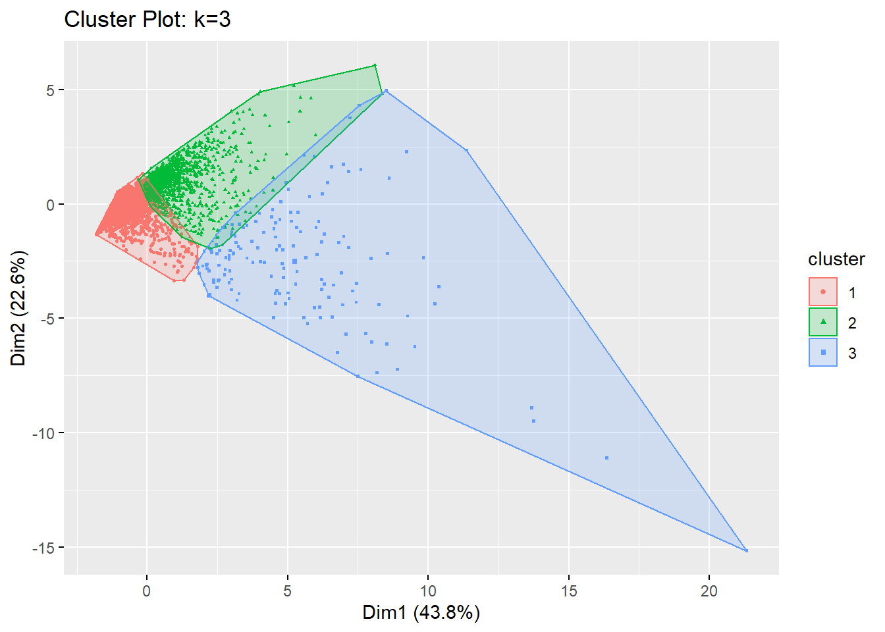
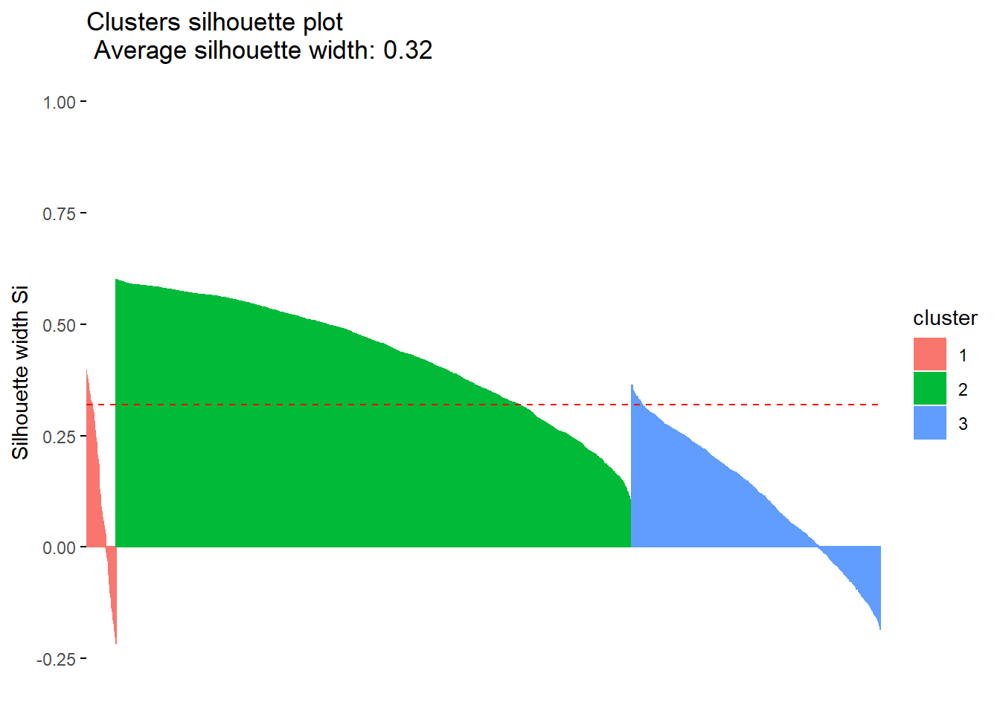
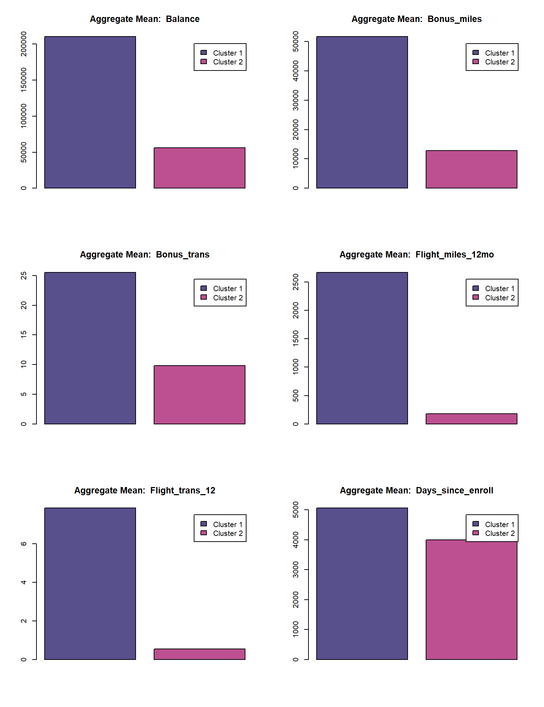

EastWestAirlines <- read.csv("C:/Users/Alex/Downloads/EastWestAirlinesCluster.csv")
head(EastWestAirlines)str(EastWestAirlines)## 'data.frame': 3999 obs. of 12 variables:
## $ ID. : int 1 2 3 4 5 6 7 8 9 10 ...
## $ Balance : int 28143 19244 41354 14776 97752 16420 84914 20856 443003 104860 ...
## $ Qual_miles : int 0 0 0 0 0 0 0 0 0 0 ...
## $ cc1_miles : int 1 1 1 1 4 1 3 1 3 3 ...
## $ cc2_miles : int 1 1 1 1 1 1 1 1 2 1 ...
## $ cc3_miles : int 1 1 1 1 1 1 1 1 1 1 ...
## $ Bonus_miles : int 174 215 4123 500 43300 0 27482 5250 1753 28426 ...
## $ Bonus_trans : int 1 2 4 1 26 0 25 4 43 28 ...
## $ Flight_miles_12mo: int 0 0 0 0 2077 0 0 250 3850 1150 ...
## $ Flight_trans_12 : int 0 0 0 0 4 0 0 1 12 3 ...
## $ Days_since_enroll: int 7000 6968 7034 6952 6935 6942 6994 6938 6948 6931 ...
## $ Award. : int 0 0 0 0 1 0 0 1 1 1 ...# 4
ewa_data <- as.data.frame(EastWestAirlines[-c(1,4,5,6,12)]) # Don't need ID and Awards variables as well as Features that are categorical
# Checking for NA
table(is.na(ewa_data))##
## FALSE
## 27993# 5
ewa_data <- data.frame(scale(ewa_data))
str(ewa_data)## 'data.frame': 3999 obs. of 7 variables:
## $ Balance : num -0.451 -0.539 -0.32 -0.584 0.24 ...
## $ Qual_miles : num -0.186 -0.186 -0.186 -0.186 -0.186 ...
## $ Bonus_miles : num -0.703 -0.701 -0.539 -0.689 1.083 ...
## $ Bonus_trans : num -1.104 -1 -0.792 -1.104 1.499 ...
## $ Flight_miles_12mo: num -0.329 -0.329 -0.329 -0.329 1.155 ...
## $ Flight_trans_12 : num -0.362 -0.362 -0.362 -0.362 0.692 ...
## $ Days_since_enroll: num 1.4 1.38 1.41 1.37 1.36 ...We’ll be using NbClust function to decide the optimum number of clusters.
## *** : The Hubert index is a graphical method of determining the number of clusters.
## In the plot of Hubert index, we seek a significant knee that corresponds to a
## significant increase of the value of the measure i.e the significant peak in Hubert
## index second differences plot.
## ## *** : The D index is a graphical method of determining the number of clusters.
## In the plot of D index, we seek a significant knee (the significant peak in Dindex
## second differences plot) that corresponds to a significant increase of the value of
## the measure.
##
## *******************************************************************
## * Among all indices:
## * 7 proposed 2 as the best number of clusters
## * 9 proposed 3 as the best number of clusters
## * 1 proposed 4 as the best number of clusters
## * 1 proposed 7 as the best number of clusters
## * 4 proposed 8 as the best number of clusters
## * 2 proposed 10 as the best number of clusters
##
## ***** Conclusion *****
##
## * According to the majority rule, the best number of clusters is 3
##
##
## *******************************************************************Based on majority rule, NbClust method suggest 3 clusters.
Scree plot using total within sum of square
library(factoextra)
fviz_nbclust(x = ewa_data, FUNcluster = kmeans,method = "wss")Plot using WSS method, we can either select optimal numbers of clusters to be 2, 3 or 4
Plot using average silhouette width
fviz_nbclust(x = ewa_data, FUNcluster = kmeans, method = "silhouette")Silhouette method suggests optimal numbers of clusters to be 2
ewa_km2 <- kmeans(x = ewa_data, centers = 2, nstart = 30) # k = 2
ewa_km3 <- kmeans(x = ewa_data, centers = 3, nstart = 30) # k = 3
ewa_km4 <- kmeans(x = ewa_data, centers = 4, nstart = 30) # k = 4
ewa_km_compare <- data.frame(
cbind(
rbind(ewa_km2$tot.withinss,ewa_km2$betweenss),
rbind(ewa_km3$tot.withinss,ewa_km3$betweenss),
rbind(ewa_km4$tot.withinss,ewa_km4$betweenss)
),
row.names = c("Tot.withinss (Smaller the better)",
"Betweenss (Larger the better)"))
colnames(ewa_km_compare) <- c("k(2)", "k(3)", "k(4)")
ewa_km_compare
We can clearly see that clusters with 3 and 4 are highly overlapping.
Silhouette analysis is a cluster validation approach that measures how well an observation is clustered and it estimates the average distance between clusters.
## cluster size ave.sil.width
## 1 1 451 -0.04
## 2 2 3548 0.60## cluster size ave.sil.width
## 1 1 153 0.10
## 2 2 2595 0.43
## 3 3 1251 0.11
## cluster size ave.sil.width
## 1 1 790 0.05
## 2 2 1678 0.35
## 3 3 143 0.13
## 4 4 1388 0.27Upon carefully inspecting the 3 Silhouette plots, we can see that some data points are poorly clustered. But we have to select an optimum number of clusters provided there are minimum number of datapoints that are poorly clustered.
In Silhouette Analysis, datapoints with scores:
A value of close to 1 indicates that the datapoint is well clustered. In the other words, the datapoint is similar to the other datapoints in its cluster.
A value of close to -1 indicates that the datapoint is poorly clustered, and that assignment to some other cluster would probably improve the overall results.
So, We can further analyse as follows:
table(cluster::silhouette(ewa_km2$cluster, dist = dist(ewa_data))[,3]<0)##
## FALSE TRUE
## 3689 310table(cluster::silhouette(ewa_km3$cluster, dist = dist(ewa_data))[,3]<0)##
## FALSE TRUE
## 3567 432table(cluster::silhouette(ewa_km4$cluster, dist = dist(ewa_data))[,3]<0)##
## FALSE TRUE
## 3629 370So among the 3 options (k= 2,3 or 4) for selecting an optimum number of clusters, we can clearly see that k=2 clusters have the minimum number of datapoints that are poorly clustered.
Selecting an optimum number of clusters also depends on the Domain Knowledge.
Now selected the optimum number of clusters to be 2, we will perform analysis on clusters with 2 centers.
Number of datapoints(in this case, customers) in each cluster:2 Clusters: based on the Aggregate Average values, we can see that the two clusters belong to infrequent fliers and frequent fliers.
